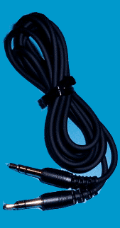
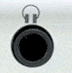

Goldwave 基础入门教程
八、翻录磁带 返回
有时候我们需要把课文的磁带翻录到电脑中，利用GoldWave的录音功能可以实现，下面我们来看一个练习；
1、启动Goldwave
1）点击桌面上的Goldwave图标，或者在安装文件夹中双击Goldwave图标，就可以运行Goldwave；
2）第一次启动时会出现一个提示，这儿点“是”即可，自动生成一个当前用户的预置文件；
3）顺利进入后出现一个灰色空白窗口，旁边是一个暗红色的控制器窗口，它是用来控制播放的；
2、连接电脑和录音机
1）找一个对录线，两头都是一样的立体声插头那样，也可以自己把两个坏耳机线接到一块儿；

2）把一头接到录音机的耳机输出，一头接到电脑的红色麦克风输入插孔上；

3）另外一种接法是在录音机上接Line Out(线路输出)插孔，在电脑上接Line in插孔(一般在机箱后面)，“音量控制”里面把录音打勾选择Line in；
3、录音
1）在Goldwave中新建一个文件，可以用22050和5分钟那样，调整好录音机的音量；
2）放一下磁带，然后点录音按钮，录一小段然后停止，看波形、试听下效果；
由于是从麦克风录音，录音机的音量不用太高，多试几次，找到恰当的音量；
本节学习了翻录磁带的基本方法，如果你成功地理解并完成了练习，请继续学习下一课内容；
本教程由86团学校TeliuTe制作|著作权所有
基础教程网：http://teliute.org/
美丽的校园……
|
|
转载和引用本站内容，请保留版权信息和本站链接。